1 The hungry human
Humans have descended so deeply into the realm of creation that they
suddenly gain awareness in a world of animals. They entered it from
the underside of a woman. Did they not dive head first into the center
of Mother Earth? They certainly have not come forth from their
father's bosom as they would want to believe. No one likes to see that
a human begins his life in a state of perversion and journeys
continuously deeper into its realms. Humankind as a whole is doomed
and will remain so because it has the same drive as the animal to
survive in it. How many have ever become aware of their horrible
condition? Just to the contrary, humans don't want to see themselves
as a symbol of an excrement and thereby they lose all sensing for a
higher reality of life.
Men and women have forgotten that they came from a higher world. They
do not know what they are supposed to be doing here on Earth, nor are
they going to know what will happen when they lose their bodies. To
find out that they alone are responsible for their life must remain
hidden because it would expose their hatred for God. Instead they
invented a god of infinite love who forgives them for all their wrong
without having made correction. An all loving God lets them go on with
their life in a doomed universe of space and time.
Men as well as women have chosen to serve a lower nature in
themselves. They believe that they must get their sustenance from a
visible world. But it came as a suggestion from an evil source through
the mouth of a woman who enticed the man to eat a material
substance. And as he obeyed he became that lost human being he is
today.
The lower realm of creation has the existence of death. It gives power
to good and bad emotions, it requires a need for food, a desire to
procreate and to build an identity of Self. Unconsciously remains the
knowledge that all this is a fake existence and the result is fear of
death.
Why have people forgotten to see all this and why does rage come up
whenever they are reminded of what they are doing? It started far back
in Eden of Immortality where history tells of the first man who
disobeyed God by eating the food of the woman. This fatal decision
became his death. Now people hide their guilt with an expression of
rage whenever they are reminded of it.
There exists a knowledge from ancient scripture, that is not yet
emasculated. Adam had made a wrong choice as he decided to feel
lonely. He grew an evil (Eve) nature inside himself which came in
existence as his lower body. It began at his lowest rib and is
represented in his emotions, his need for food, his capacity for
procreation, his urge to socialize, move around, play with matter and
make a secure home for himself. Adam escaped into Eve. Eventually he
will have to live a life as a woman who is caught entirely inside the
lower body.
The woman began her life as man fell out of himself. She lends herself
as the mouthpiece of the serpent force. Mother Earth's nature is feminine
in design and when human kind enters into it, it becomes endowed with
the spirit of female. The male is entangled with woman through
mother, daughter, mistress and wife and thereby is turning into a
female himself. The law says that one becomes what one loves.
Man's Odyssey into a woman's body tells of a journey that leads to
greater dependencies with every incarnation. Soon there is no more
strength to turn around and one is doomed to enter the animal and
plant kingdoms.
Why does Mankind suppress the knowledge of how to get out of his trap?
Because it already is on the side of the female, and all of its life
is dominated by the serpent force. Every individual had been bonded to
it at birth. As long as a man looks to the woman he will not see his
doomed existence.
One of the deepest imprints on a human brain is pain when experienced
in the infant stage. That determines what his future life will be,
because it has cut grooves into the brain and later as a man, he
cannot get out of them whenever he thinks and feels. So it comes that
early experiences act up throughout all of man's life. Although at
birth one came with a freshly impressionable mind, it has hardened
with the growth of the body. The process is similar to a concrete slab
when a footprint is made upon it, and which later cannot be
erased. All early pain, fear, witholds of physical needs are
unerasable in the grown up stage and one falls into them whenever an
outer experience passes by. A human has reacted to pain with his
physical system before he could scream, he screamed before he could
speak and spoke before he could communicate. Early pain has been
spilling over from one system to the next and did its damage. It has
produced a malfunctioning entity. Although a man may be knowing all
this, he still stumbles and falls whenever he acts.
The higher world can be reawakened through the practice of
self-observation. It will show the wrong direction taken and that it
must be reversed. One becomes aware that all evil enters a human being
from outside in the form of a hypnotic suggestion. It reigns the world
but it cannot affect the one who awakens to a new direction that comes
from inside. Only a hypnotized human obeys suggestions that come from
outside. Therefore, the cause of all craving is a choice to eat from a
world that has its foundation in a serpent's suggestion.
Are you inwardly our outwardly directed? There is a law that says:
Whatever controls you will also comfort you. If you are outwardly
direted, an outside world will support you. It will maintain you by
giving you its life. Now you are controlled by this world's knowledge,
by emotion, family and friends, by a need to dominate the environment
and to become its ruler. Don't you see that all these are phantoms
that have no substance at all? That they all came into existence in
support of a rebellion against God's warning not to go into a certain
direction?
It all began when Adam decided to disobey God. As a result he became
aware of a lower creation of matter, energy, space and time . All this happened so very
gradually that it veiled an awareness of it. Instead of instant death,
humans are being slowly put to death. Awakening means to see all
this. It brings an urge with it to totally reverse one's
life. Wouldn't one take the hand out of the fire the moment one became
aware of it?
In a physical universe, man has surrendered his life to emotionalism
(food, sex, music, art, etc) and ego-manifestations, (family,
business, prestige and ego-accomplishments). He clings to seeing
himself as a successful leader of society. But depression and anger is
continuing to molest him, so he resigns himself to a life that deadens
the awareness of their existence.
To whatever you attach yourself affects you negatively; and the longer
you live with it, the more it enforces its life on you. When at death
it is torn away you only want it more. And that's what you get
again. You defend your dependencies and believe that they are
necessary for your existence. You do not want to find out that this is
the animal life, instead you believe that your capability to think
makes you different. Again and again you escape into a lower
life. When you are told that this is not life you say, "But everyone
is the same as me!" Don't fall for this lie because you can be
different.
There is something about the guilt of disobedience that does not want
to be seen and it put out with an escape into a lower world.
What is not known is that with the entrance into Earth everyone has
taken the wrong direction. And they are channeling their guilt deeper
into their bodies with wrong foods, wrong sex and a megalomanic ego.
So you were little and you were angry. Anger was not given to you, you
brought it with you as you entered this Earth, but your parents
punished you for expressing it. To escape from pain you suppressed
your anger by channeling it inside your little body which later began
to malfunction because of the damage it had done. Getting accepted and
loved meant everything to you, so you bonded with your parents because
you were incapable to change your nature at that time. You lived under
the curse of childhood and had no other choice but to conform and
become a social being. In your ignorance your drive to survive
physically meant life to you because this world's love and acceptance
was all you had left as a child and later you escaped your unconscious
guilt by indulging in more food, more sex and more ego-acceptance.
Society encourages man to either suppress or express pain because it
fears nothing more than to expose the cause of it. To discover that
one is a "God Hater" is too much. Society's very essence is to
glorify a visible world and for man to break away means death to his
known life. He is bonded to it by those first imprints that were made
as he entered Earth.
Earth's population consists of humans who fight for survival in a
forever dying world. They traverse a road on which all falsehoods
peregrinate. Humans consume their world with a hunger for "news" that
reports gossips, accidents and intrigue. They are bound to a phantom
life like a stunned animal is caught in the headlight beam of an
oncoming car. If told of the danger, they become very angry. They are
driven to kill their souls and that's it.
If you are the one out of a multitude who has an awareness of danger,
if you really see that you live in a very hazardous and menacing
place inside and outside yourself, you will get out fast. Only that
gives you back control over body, mind and emotion. They now become
your tools for rescue. The whole of society will never know
this. Psychiatry, psychology, politics, medicine, religious ministers
are making you think you are alright as long as you believe in
God. But that is not enough. They don't know anything about
themselves and absolutely nothing about the fact that they are living
in a dying world that takes everyone along into its
abyss. Unconsciousness keeps on building healthy bodies, big families,
romantic atmospheres, refined mental concepts, and sterile places. But
now you know that all of this is deadly, you will escape.
O generations of vipers, who hath warned you to flee
from the wrath to come? - Math
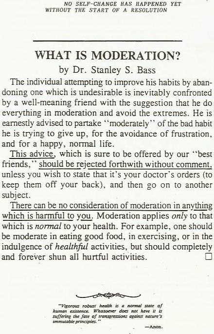
2 Are you surviving the mushroom cave?
This tale tells about a father's son who has made a wrong choice. What
follows is not for fainthearted to hear because it takes courage to
face the results of one's wrong actions. This story is meant for those
who want to return from their journey. It is a story that wakes up the
dream.
It all began when a son derived pleasures from opposing his father's
will. Thereby he had to live without his blessings and oblige himself
to journey into the wilderness.
The physical dream world is such a wild place where a man will fall
from one mishap into another. It is a place where one loses his way
and ends up in a ditch.
That actually happened to the disobedient son in this story. He was
laying in the ditch with an aching body and as he looked around in
despair, he suddenly noticed an opening to a vast cave,. As he crawled
inside, he found trance-inducing mushrooms growing all over its walls
and he thought, "drugging myself would be just right!"
Self-destruction will turn into a pleasurable desire to a resentful
man, and what followed became catastrophic - his state of
bitterness turned into a hate for his father. From now on, whenever he
was confronted with a suggestion that said: "No! You can't have your
way," he became angry. And to escape the resulting pain he went
deeper into the dream. He disconnected himself from his "guilt
feeling conscience" (Soul) and escaped into a "will of his own"
(ego). Now at last he could do what he wanted to do - to find
the fulfillment of all his hidden desires. It became a life that was
experienced apart from his father's will.
But only too soon did he wake up to the awareness that his life was a
nightmare and he ate more mushrooms. This went on for a long, long,
time.
Planet Earth serves as a mushroom cave where humans can do what they
please and get away with it. And when the awareness of their futile
lives enters into their dream, they quickly conjure up
mushroom-related activities. (smoking, drinking, eating, worshiping,
entertaining, working, exercising, etc.)
As the body of the caveman became less able to absorb the poisons, the
awakened state began to filter into the dream. The true condition came
to the surface. The pain of wrongness was unbearable and he stormed
for the opening. But - there was no opening. What was left of
the way out had shrunk to the size of a fist. He was buried alive and
he screamed and hollered.
Had the opening disappeared? It really had not - anger had
distorted his perceptions. Unconsciousness had blocked out the pain
but not the results of his wrong acts. Eating intoxicating substances
had the effect of producing a growing ego-body which now threatened to
squeeze him out into a never, never world where escape from pain would
become impossible. Contemptuously he ate more mushrooms. The trance
that followed came abruptly to an end when his growing body had run
out of space - the cave simply squeezed him out of his body. Extreme
hate became his only life. Unconsciousness is a deliberate act, but
nature came to his rescue and let him escape into the body of a
dog. (Dog is a reversed expression of God). At last he could express
his life again.
Fighting for survival had always been the ego's greatest
accomplishment. But this story could have ended differently. The Soul
can become aware of its growing ego before it is too late for its
awakening. The Soul has to bear the pain of
self-investigation. Awareness is the beginning of the way out. The
shock to see the truth about one's self has to be endured. This will
create the ability to "remain awake." The desire to maintain the
body by natural means will come back. Now escape becomes possible.
An awakened consciousness will always make a tremendous effort to turn
away from the lure of the physical life. The higher will not come down
to rescue the lower because it has no connection to it. The physical
world began where the spiritual left off.
Self-observation is able to reveal that "cause" is being awake, and
"effect" is the CHOICE to fall asleep. An awake man will not accept
effects, he remains at cause in every situation. In Heaven there are
no effects.
The material universe came into existence as an effect of a
choice. There are no choices in Heaven. The dreamworld is real only to
the degree the desire for a choice is real. That was the lesson the
rebellious son had to learn.
All your life is but a going out to the place of
execution, to death.
- John Donne
3 Man is a hunger creature
r0.2
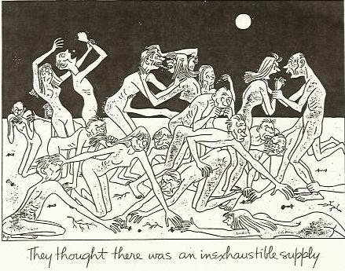
To look at physical man objectively, there can be seen a torso that
has an entrance and an exit. Attached to it are two legs that bring
the torso to food and two arms that stuff it into an opening. The food
is processed inside the torso. Such is the man that roams the earth.
Man can never be satisfied with food. After the body has been filled
up at dinner time, hunger switches to another level. His ego has to be
stroked to satisfy his emotional system, and after that he must
entertain his intellect. He needs physical activity to calm down his
unrest and to keep his Soul sedated. After he has exhausted himself,
he falls asleep. The next day he performs the whole scourge over
again.
4 On what kind of foods do you exist?
Examine your food intake. But the question, "Can a mind drugged with
food do that?" Can you become aware of what foods do to your body?
Here are some dietary facts: When you eat meat and dairy products,
know that they do putrefy as do most cooked foods.
- Regular foods putrefy in the body, they turn into acids that
destroy the body. Acids are such poisons as skatol, indol, phenol,
ascetic and uric acids. They are responsible for the premature wasting
away of the body. They aggravate your mind.
- Such foods that consist of carbohydrates ferment in the body and
produce alcohol that drug the body. They are your rice, potatoes,
breads and cooked vegetable. They will narcotize your mind.
- Only the foods that digest in the body are completely
metabolized and thereby eliminate it properly. These are fresh ripe
fruits. They allow your mind to remain thinking clearly.
The Soul of man does not need food to exist except
that it keeps the body in a physical universe. Only here does the Soul
experience pain. Fruits do the least damage to the body. A man's
physical life has the purpose to outlast his sleep of perversion. It
is the sleep in which he consumes and kills the living cells of other
beings to remain in it. To eat living cells from an outside
environment is one thing but to imbibe dead food is quite
another. Destroyed foods do harm by drawing living cells out of his
own body. This is self-consumption and the cause is death.
Minerals are the food for microorganisms; microorganisms are the food
for plant cells; plants are the food for animals; fruits are the food
for humans; air is the food for saints.
Man surely is a horrible creature; his killing nature provides the
meat, his perverting nature cooks it, and his self-consuming nature
eats it.
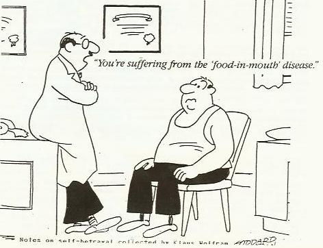
5 Fruit eating is least offensive
Fruits have all the nutrients a human body needs to maintain maximum
health, and no other food is needed. They are predigested by nature
and take away the least energy while being assimilated by the body.
But to fancy perverted tastebuds, man craves for food that is
increasingly adulterated. First he eats apples, but soon they won't
satisfy, so he obliterates their food-value in an apple pie. Eating it
destroys digestions that results in sickness. He never suspects the
cause of it; he just goes on to the next violation.
The greatest hoax mankind lives by is the belief that foods have a
healing power, that a particular food can do something, especially
when it is high in vitamins or some other "nonsense." But it must
become clear that no food is good for a particular kind of deficiency
or disease, not is it building a healthy body. A food that has a
healing power simply does not exist because the body heals itself, and
it is done fastest if there is the least interference from any outside
source. Every "doing" is damaging and fruits merely do the least of
it.
All foods need life-force to be process inside the body, and when that
is used up, the body will die regardless of the food
eaten. Undereating does not stress the body; it does just the
opposite: it extends its life because life-force was saved.
Today, exercising has become such a craze that it has been made into a
panacea for health. Exercise is incapable of giving health because it
also uses up life-force. To attain health, it would be better to sit
still and do nothing. Exercising can be seen as an abreation of
unrest and therefore it is more permissible than other vices. Man's
soul wastes away on all levels of life, whether these are emotional,
mental or physical.
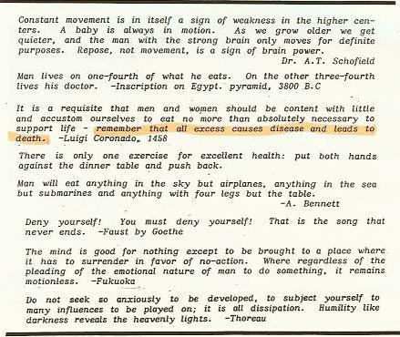
6 The self-consuming body
If a man's (or a woman's) correct diet is delicious ripe fruit only,
then how can he exist, yes, even thrive on foods that had been
destroyed? There is only one answer: Man does not feed himself, he
consumes himself! An unnatural diet makes him draw violently on an
inherited essence, and that essence is like the essence of a seed
whose inner substance nourishes its sprouting life. For a little while
man can live in what he calls "good health" regardless of what he
eats.
Foods do not nourish the body nor do they maintain its warmth. And all
preconceived ideas about the value of vitamins, minerals, calories,
carbohydrates should be highly questioned. Whatever beneficial foods
is ingested has no beneficial value whatsoever, just the opposite is
true, it helps to speed up the expenditure of the seed's life
substances. A seed sprouts regardless of what foods are eaten. It is
its vital energy that keeps it alive and well.
No part of a food is converted into flesh. Body substances come into
existence when invisible vital energy is coaxed into flesh by the
eating of foods. Invisible life-energy is changed into body
substances while food remains the catalyst. Food is the stimulant that
changes invisible life-energy into visible substances.
The universe of matter, energy, space and time belongs to Lucifer and to live there requires
self-consumation. One's essence must kill and be killed to take part
in it. The body turns living cell structures into unpleasant waste. To
kill life to have life is an abomination. But modern man has become
worse. His increasing ignorance makes him eat destroyed cell
structures. He cooks his food and thereby is condemned to draw life
out of his own body to eliminate the waste. He loses his teeth first,
then his inner structure and at last his organs. Humans are
self-consumers - cannibals of the first degree.
A healthy body can remain active for several months without eating a
morsel of food. Foods, medicines, activities, companionships are
merely stimulants that draw out the seed's vital energy. In its
strictest sense, they serve as a force that draws vital energy into
action. Thereby giving the body, intellect, and ego its strength. And
the more perverted these stimulants become, the more they draw on
vital energy. All stimulants have a steroid effect, they force false
growth.
A human is convinced that his body is his life, but this structure of
flesh and bones is only the seed buried on dark planet earth. Foods
are the moisture that stimulate the seed, (the carrier of the Soul)
into action. The seed begins to sprout. Man's purpose is to come out
of the earth and shake off its dark influences.
Why is it so hard to abstain from doing wrong? Because the Soul has
chosen to hide away in physicalness and fears exposure of having made
a wrong choice. But humans resent anyone who practices fasting
exercises. As it is well said in Homer's odyssey; "Death in all its
shapes is hateful to unhappy man, but the worst is death from
hunger."
Every Soul that came through the belly of a woman is just seed (a
body), but with a capacity to come to life again. As encapsulated
cosmic energy, the average body exists for three score and ten years
and dies, never having risen above the earth. This is an unredeemable
tragedy. The knowledge that Souls must continue life in the animal
realm is still accepted, but only in fairy tales and ancienct
myths. Only degenerated Souls will animate the animal kingdom. It is
the underworld where they have no purpose and direction other than to
make up for misdeeds - "for death in all its forms is
unacceptable in heaven."
Earth is a place where the human Soul may raise from its death again
which she had experienced in heaven. In a child's body she is an
animal, totally without self-awareness. And to remain eating unnatural
foods and indulging in animal emotions is like poisonous moisture that
chokes the capacity for growth. This kind of Soul remains on its
downward path by wasting away her inheritance before a higher contact
could have been made. Therefore, abstinence from wrongness is vital,
and as painful as it may appear, it must be endured. After all ties
have been cut, the body will stop suffering while the Soul is able to
ascend to a higher level.
Rage and self-defeat are attachments to a dark environment and there
exists no human entity who does not suffer from it. Therefore clean
living, accompanied by a light and sparse diet are absolutely
necessary. Why would anyone waste away his body prematurely when it
could bring him back to self-awareness?
Man must not extinguish his seed-energy with food, sentimentality,
sex, social acceptance and material gain. " All these are the vile
acts that satisfy hunger!" said Maxim Gorky. Man has chosen darkness!
But having done it deliberately, he can also choose to return to life
deliberately.
Hunger is a cancer, it is a consuming sickness. Humankind has sunk so
deeply into the mire of earth that it has lost strength to free itself
again. It wastes its energy by helping others while sinking. Who still
knows how wrong it is to help those who won't help themselves, or to
expect their freedom them? Humankind smothers its guilt with
irresponsibility. To help the weak justifies wanting to remain
weak. All wallow in the same ditch. The statement "physician heal
thyself" is entirely ignored.
Man sees his body as the cause of his doom and treats it as if it were
an enemy. He attacks it with knives, medicines, radiation and psychic
formulas. His ignorance is absolute.
Hunger is the result of having turned away from higherness, and like
any disease, it must be healed by non-interference. HE MUST DO
NOTHING! That will heal anything, including all the hungers of body,
mind, emotion and activity. Let no interferences undermine the
process.
If one studies himself he will see that destroyed foods not only use
up precious energy but throw the body out of balance. It will die
before its time since it must draw life-force from within its own
tissues. Young children have already crooked teeth, bad eyesight and
deformed bodies.
Man has little time for self-work when he wastes himself away battling
self-created sicknesses. This planet's nature will never help him in
his struggle because it teaches death. It's first law is "eat or be
eaten." Man lives on a dying planet and only a complete reversal of
all his values can bring his release.
To reveal how far down a man has degenerated he may examine the nature
of his hunger. Does he extinguish hunger with perverted foods,
activities, companionships, and prestige? "You become what you eat"
is certainly true. Man turns to woman for sustenance and woman gets
it from cats and dogs.
No one can assist the Soul's growth in any way whatsoever except by
doing less. That means to maintain a minimum interference with a
higher way of healing. It is a command to do nothing. One may begin
this path by eating only a few fruits, breathe clean air, choose a
quiet and harmonious environment, think right thoughts, and indulge in
fewer and fewer activities. These are the steps that will slow down
the self-consuming process immediately.
7 What to expect from a fruit diet?
After a man has eaten fruits only, he has a feeling as if he hasn't
eaten enough. He is listening to a lie because fruits maintain a body
one hundred percent and no other foods are needed. It is dangerous to
eat the regular fare of dead foods with broken or fouled cells; it
would be better for the body's health to take no food at all, but wait
until the right ones become available again.
There remains a feeling of emptiness after a meal of fruits. Hunger
has not been satisfied. But this feeling is a deception because the
body has been fed properly. Fruit is not a food that narcotizes
emptiness as destroyed foods do; instead, the sublime character of
fruits introduces pain inside every unhealthy body, though in this
instance pain becomes valuable because it is the signal of a
withdrawal symptom. Having eaten garbage foods all during his life,
the man expresses a symptom as the start for self healing, and it is a
healthy experience.
All stimulating practices are pain-suppressing; it is their only
function. And all of man's indulgences in food, wasteful activities
and emotional upsets bring him only a temporary escape from
pain. After a while it continues to surface until an awareness of it
has been suffocated to death. This is the process by which man is
annihilating his Self.
When a man is able to remain with eating fruits only, he will not
experience miracles of health right away because first, it will bring
up the true condition of his body. He may feel sick for many years to
come. Besides a very uncomfortable state of pain and unrest, all the
results of his past wrong eating habits will surface. Pollutants have
permission to come out, and his body will be weak and look
emaciated. While enduring the pain, he can be happy that he is getting
healthy. At the end a new body will emerge.
There is a simple rule that applies to body weight. When only fruit is
eaten and there is weight gain, the body is healthy, but if only fruit
is eaten and there is weight loss, the body
becomes healthy.
There is a warning. All though an all-fruit diet is the only efficient
for any man and should be the goal of all dietary accomplishments, it
is not recommeneded for degenerated and depraved bodies, at least not
all at once. One would not tell a man with a broken leg to run
without his crutches. If an Eskimo who was raised on blubber suddenly
ate fruit, he might die of starvation because his system has lost its
digestive power. But even he could raise his average life span from
thirty years to sixty or more by reeducating his body to a more
etheric diet.
It is not only man's physical machinery that can be healed, but also
his emotional, intellectual and psychological systems. They need their
own kinds of etheric nourishments. No one must separate one system from
his other systems which he has built around his physical body because
all of them need reeducation.
As fruits maintain the health of the body, so does a simple activity
humble the ego. Only a constant determination not to interfere with
the inner power for self-healing can return health.
Remember that all tastes are acquired. Once you lose
the taste for meat, for artificial sweets, and harmful stimulants, it
will never return.
8 Food is an instigator, not a life-giver
As a seed sprouts from its own substance, so does the body live from
an inherited essence. This essence is limited.
Foods do not give life; they simply goad man to remain alive in a
physical body. That is the reason why the body can stay alive on
virtually any substance it ingests. Foods are not responsible for
growth either; the body grows regardless of how little or how much
food is eaten. If minerals, vitamins and fruits gave life, the body
would never die.
There are people who have proven that they can maintain their body
perfectly on a few ounces of fruits per day. It keeps them
sickness-free throughout all of their life. It also is a well-known
fact that unnatural foods diminish life-expectancy
considerably. Narcotics, alcohols, drugs, medicines and processed
foods need an incredible amount of energy for their metabolization and
thereby they exhaust the body's life essence. Man's whole system
starts acting up in rebellion to the death threat from these
substances. Like a country that must raise an army in response to a
threat, so is the body forced into defense. Its cells multiply
rapidly. Man's ignorant nature interprets this acceleration of
body-processes as a show of vitality while it really is a wasteful
expenditure of life-essence. Every threat with poisonous substances,
whether to plant or animal bodies, is a waste of essence.
Another threat is forced exercise which incites the body into
artificial health. When discontinued, the body in its economical
husbandry reverts back to its former condition. Bodies becomes
athletic after every goad, whether it represents a drug (steroid),
glutinous eating or exercising. Activities as well as unnecessary
foods do not maintain health.
Behind every goad is the urge to survive in an alien world. Therein
lies the appearance of strong bodies, which also reinforces the ego.
In his drive to survive, man travels farther and farther away from his
spiritual home. Survival-orientation takes away energy that could be
used for self-awakening: it maintains the so-called life of a dying
man.
Threatening death to living cells with poisonous substances becomes
man's thrill of pleasure. He feeds on the fizz of his own
destruction. Satisfying hunger with food, sex and activity is the urge
to celebrate death. Man calls dying "life-giving," but what really
gives life, he calls dying.
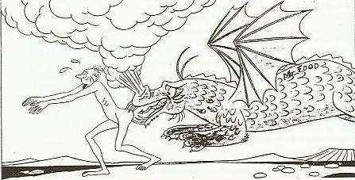
9 Narcotic food
Man has a certain type of diet that is most natural to him, just as
every animal has. Man's body established itself in a tropical
environment where fruit was most dominant and readily available at all
seasons. Any prolonged digression from this natural diet ultimately
brought penalties. This is seen in man's many dieases.
The type of food man now eats is unnatural; it conforms to his false
life. Man is lost and to cope with it requires intoxication that dulls
awareness. Today people smoke, drink alcohol or take drugs whenever
the slightest uncomfortableness touches them. But before these pain
suppressants were known, it was an adulterated food intake that gave
the same results. Fermenting and cooking of food had been an earlier
practice by which they tranquilized themselves.
Man must become aware that food which ferments while being digested in
the body, sets off various alcohols. The absorption of these alcohols
has a similar effect as the drinking of them. It also makes the mind
drowsy and sedates the body. Deprive a man of fermenting food and he
experiences and emptiness inside; more than that, he feels voraciously
hungry. He suddenly is aware that he wants to eat all the
time. Unfortunately he never suspects that he is an addict to
food-alcohols. Gluttonous people are drunkards, they cannot stand
being sober.
After the fermentation-drug, there came another violation and it
presented a much greater threat to health. Man began to eat pure
proteins, the meats, fats, and other indigestibles. Their
destructiveness lay in their putrefying efficacy that produced toxic
acids when processed by the body. Acids actually poison it and stupify
the mind. Today, man cannot stay away from such foods as cheeses, a
product of decomposed milk, and wine, made out of festering grapes.
There are still substances man imbibes that are undoubtedly the
worst. These are the inanimates, the vitamins, medicines, drugs,
sugars, salts, and spices. They do the greatest harm. It is a fact
that "matter" that is not bound within a living cell is poisonous to
all sentient beings. Not even plant life can metabolize dead matter
without a penalty, much less the animal body. For the digestion of
minerals, the vast world of microoganisms was created. Man does not
know that, becausee he has already gone too far into the wrong
direction. Ironically, feeding on minerals does not in the slightest
appear strange to him - so deeply is he in love with the unnatural. He
even forces his perverted ideas on everyone and everything he comes in
contact with.
Minerals are the food for microorganisms and microorganisms are the
food for plants. Men tenaciously believes that mineral substances give
life; they do not know the tremendous penalty they pay for this
deception. To eat inaminate substances, whether it is man, animal or
plant, speeds up the depletion of life-essence. Due to the urge to
survive, living organisms must draw on their life-reserves. Plants
grow big and produce seeds quickly when given mineralized fertilizers,
but they become less in substance and therefore are vulnerable to
pests. Minerals act upon plants the same way as drugs act on animal
bodies. They force body growth. The body that grows fast dies fast due
to wastage of vital energy.
It is as natural for plants to feed on microorganisms as it is natural
for man to eat fruits, and naturalness is the formula of health. But
man is an alcohol and acid imbiber even if he has never taken alcohol
or acids into his mouth. He thrives on his unnatural diet as a
homosexual thrives on his perverted sex-practices. Perversions do not
renew life.
10 No need for hunger
There can be no hunger in the spiritual realm. The higher man goes,
the less food he will need. This holds true for all of his other
hungers too. There is his desire for "knowledge" and his indulgence
in practices that reward him with "good or bad feelings." All
hungers fade away the closer he comes to his home. Really, all a man
has to do to return is to stay away from harmful habits long enough
until his withdrawal pains have released him for good.
Every sensible man must sooner or later come to this recognition:
What I get into also gets into me. If that is a true
principle then what I let into my body and mind becomes me. If I have
fed myself on Television, companionship, junkfood, sex and worldly
business - that has become part of me. What lives when I live and what
talks when I talk? Now I know why I am paining. I observe you and,
when you, I know who is talking. Do I want that?
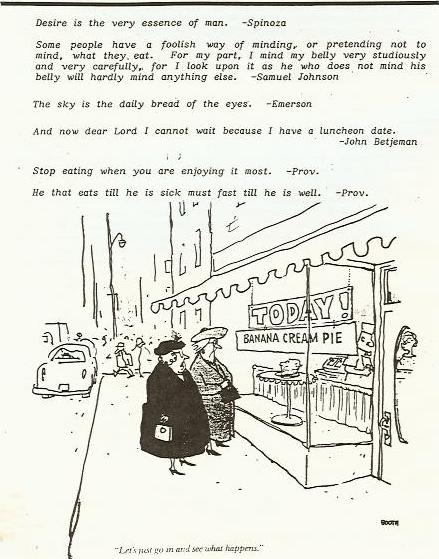
11 Unnatural activities force unnatural foods
Man's purpose on earth is to return to hs father's home. This lies in
a spiritual world which does not require a matter, energy, space and time universe, but instead
he makes earth his home, chooses a wife, and raises a family. To
become accepted he develops an ego. His conquering activities
destroyed the environment. Forever in search to advance, he always
found himself on the move facing harder living conditions while having
a difficulty finding his natural diet. So he nourished himself with
substitute foods in order to cope with harder conditions. He began to
use fire to prepare his foods. To push out crowding neighbors he had
to arouse himself to anger. He ate aggravating foods as was derived
from meats, herbs and minerals. They began to draw excessively on his
vital energy and shortened his life.
Man is multiplying himself to extinction. This, of course is in
alignment with earth's destiny which is to destruct itself. Man has
forever burned down forests that increased the harshness of earth's
climate. Right foods became seasonal, making their replacement with
inferior foods necessary. Substitute foods sickened not only his body
but all of his other faculties. In time, the knowledge of a right diet
that could have saved him from all afflictions, had been completely
forgotten.
One must really wonder why man is driven to do these abominable acts
to his life. Redemption comes when man allows himself to see his
underlying drive to destroy himself, and that it has spread over all
facets of his life.
The greater there is an understanding of life, the less there will be
a need for nourishment from an outside world; or, as understanding
increases, the need for food decreases.
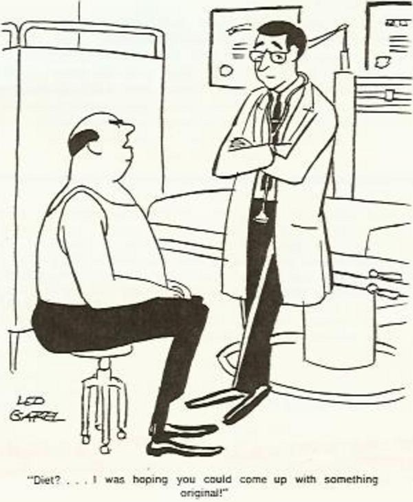
12 Understand cravings
When a person stops taking drugs his craving for them becomes
painfully strong. Stimulating foods have the same effect on the body
because they are also "pain-suppressants".
A craving must never be satisfied with what is craved for because it
gives a devestating result that is virtually unknown. A craving is not
a signal that something must be done but just the opposite, it is a
call for no action. Craving is a pain of damaged body cells as they
come out from under the narcosis of poisoning substances, and cells
need that pain to be healed. Every pain can easily be suppressed with
more drugs or food, and be pushed back into its former state of
narcosis. Pain tell that life - in the form of a feeling - has been
returning to the nerve cells again. Every increase in feeling is an
increase of aliveness.
A craving surfaces after every rest. Other words for cravings
are - hunger, appetite, desire, emotion, coveting, hope, yearning,
stimulation and greed. All are signalling a challenge for man to
either destroy himself or heal himself.
Healing starts when man begins to feed his body, mind and emotion very
sparingly and only when a wise and sane mind says so, and as long as
man sojourns earth, these faculties are most valuable in detecting
where he needs correction. It is not the desire for wrong foods that
has compelled him to eat them over and over again but the
misery of the after-effect. But this misery is valuable because
it invites the healing process.
Only a sick man (and that is everyone) experiences hunger and it is
particularly strong when he sees a banquet table full of delectable
"concoctions". Here is what he must tell himself: "The foods I
crave may taste good but they are bad for me, I simply end up with a
greater craving. I have observed too many times that after I have
eaten them I feel miserable.
I just won't do it anymore because
I am tired of hurting."
Very few people do understand that undereating is the elixir of life,
but the undereating relates to right foods. The only right food for
man is fruit and only if one has extensively experimented with a sole
fruit diet will he be convinced that this is true. He knows he
eliminates them the fastest. Other foods may still taste good to him,
but he has paid too high a prize for their indulgence. He would have
to give up his gained clear-mindedness and suffer from bodily pain
again.
13 The simple rules of eating
If God's Kingdom is all there is, then the human entity does not
exist; and God proves it by letting it die. Man is the connecting link
between a spiritual being and the animal. With man, the invisible has
descended and became visible in a physical body. When man takes
nourishments from an outside world, he declares "I do exist". To
feel alive in this world, he must kill everything that stands in his
way. Rarely does he use his existence for finding his way back home
again.
Everyone is driven by hate against the voice that calls him home. But
he cannot block it out except through anger which pops up at the
slightest reminder of his wrong journey. Taking life from his false
surrounding, he is driven to defy God by killing his spirit.
When man stills his hunger from an outside world, a payment is
demanded. This is experienced as pain.
To become worthy of the higher is to fall out of love with the lower;
so,
the first rule of eating is to eat less. It is impossible
for man to do that if he is unhealthy, not only on his physical level
but also on his emotional and mental levels.
Health returns in degrees. The more man stays away from wrongdoing,
the more of his health returns.
Health is a journey into
simplicity.
Man's physiology and anatomy are still the same today as they were
millions of years ago when he lived exclusively on fruits. And still,
fruits are abundant everywhere because these delicious manifestations
of the loftiest aspect of nature's creation will always remain his
most sensible foods.
The closer a food comes to its raw, unheated, uncut form, the less
energy will it draw in its digestion; and the simpler and unmixed the
meal is, the faster it digests.
Foods whose cells have died
through fermentation or heating, and all minerals that are not bound
within a living cell, are toxic and must not be ingested at
all. Every cell that has died becomes a poison to the physical
body. Dead organic substances gave to be predigested first to become
digestible. This pre-work is done by the plant kingdom and the vast
world of microorganisms who were especially created for feeding the
plant kingdom. The same law operates in the rainforest, where trees do
not feed directly on soil rich in minerals, rather they need the
medium of decaying organic substances processed by microorganisms in
order to grow into giants.
It must become clear that the simple diet of "fruits ony" does not
heal the body. But fruits are already predigested by nature and
thereby unburden digestive work. That leaves enough energy for the
body to engage in self-healing processes.
The release of vital
energy does not need an intake of physical substances to do its
work. Physical substances simply draw out an excessive amount of this
most valuable inheritance to keep life going in spite of the Soul's
physical indulgences. And every individual has only so much energy to
spare.
All palates can be reeducated to the fruit eating diet. This is done
most easily by going through a fasting period where the taste buds
become sensitive to wrong foods again. Unfortunately, humans remain
set in their wrong ways - and not only in their eating habits. They
do not trust in their own investigations, they rather rely on critics
and educators who
all are failures themselves.
Nothing can change the fact that the body does not receive energy from
foods that ferment or putrefy in the digestive tract. The evidence
that an unadulterated digestive system reacts violently to cooked and
processed foods should be a clear message to eradicate them completely
from any diet. But nobody wants to do that, they rather choose a
violent death before its time. The fact remains that all condiments
interfere with digestion, even stop it completely. They camouflage the
true flavor of adulterated foods by masking their repulsiveness,
thereby inviting more gluttonous eating. They must be called by their
rightful names - "POISON". How did Samuel Johnson express it?
A cucumber should be well sliced, and dressed with
pepper and vinegar and then thrown out as good for nothing.
Every man can make a giant step towards health by
committing himself to a simple rule that says:
Why not keep all foods simple? The most important single
thing I must remember is this: there are no good combinations of
foods. Not one. One only food must make the meal, and not a mixing and
matching. 'Keep it simple.' If I eat a couple of tomatoes or avocados,
I eat them only and I let it go at that! Fruit meals are the most easy
'monomeals' I can learn to live with. If this is not acceptable, at
least I will group foods together according to similarity of taste and
texture. 'Keep it simple'! I know that every wrong combinatoin is a
transfression that is visited upon the body, which is the home of
my life. It demands its toll of suffering whether I am aware of
it or not. And if I suffer, I have only myself to blame.
No man can diet or fast himself to health. He must live his way to
it. All of his living habits combined make up a life of health or of
disease, for he who is ill has marked himself a fool and a weakling!
To a much greater degree than hunger, must physical, emotional and
mental hunger be seen for what it is: an outcrop of man's hate for
God.
If a man sees that all this information is true, he is bound to make a
change. But does he have the inner courage to carry out what it
demands - or will he dive deeper into unconsciousness?
A healthy body is something real to work with because it reacts
with pain
to the slightest trespass. It is more than just the center of man's
physical life; it is the key with which he can unlock the door to his
spiritual home.
14 Fruits speak for themselves
Let's allow for our bodies to renew themselves by eating only foods to
which we are biologically adapted. These foods are fruits
exclusively. They require no cooking or preparation of any
kind. Eating fruits is natural, in fact, it is the only food that
won't enforce a penalty upon the body because it is a gift that a tree
or vine offers for spreading its seeds. Other foods involve killing,
whether it be of animals, plants or seeds.
Because a fruit diet needs no digestion, it saves a tremendous amount
of energy which now can be utilized to cleanse the body. The blood is
able to unclog the arteries. The connections between centers in the
brain are reestablished and the mind starts functioning at a higher
level.
Man must befriend himself with fruits as he would cultivate a
love for truth. But to learn the habit of eating fruits exclusively
takes a long time and only few will succeed. For most people, the
thorn of adulteration has sunk too deeply, and they hang on to it for
dear life.
With a continuation of an exclusive fruit diet, a great benefit will
be bestowed on anyone who can stick to it. Not only will he be freed
from all bodily pains, but he will feel an inner lightness. This new
state remains with him regardless of outer circumstances and
conditions. Now he knows that he will never go back. He has been cured
of his old garbage diet for good.
Man must be told over and over again:
If you cannot stick to an all fruit diet but want to,
know that your body is in command and does with you whatever it
wants. It has learned to behave like a spoiled brat, but only because
you have never attempted to take command over it. It has been brought
up in your confused mental household that has never known a healthy
life. That's why it is your duty to reeducate it. But first you must
go back to your mind and learn all about the body's proper function
and how it is nourished correctly. The application of this new
knowledge is a very exciting and satisfying venture, and you can
undertake it at any age.
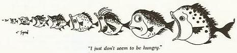
15 Eat with your mind
"Eat to live, not live to eat." Unless you eat for the sake of your
body and not for the sake of your appetite, you do not show any
control over your mind. An ancient statement says: "Eat so little as
it would keep you on the brink of survival". The author Luigi
Coronaro in his famous 16th century classic boook, "How to live
long" said: "My basic rule was never to eat more than 14 ounces of
food per day."
To be free of all bodily sickness is to eat only
what the mind has wisely selected. When the mind is governed from
above, the body is governed by the mind.
Investigate the true nature of hunger, that will begin the long
struggle "to fall out of love with eating."
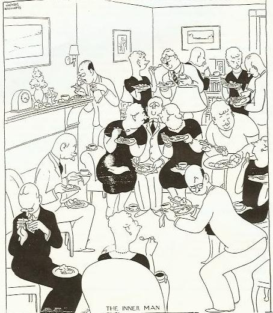
16 Toleration is a slow death
If a man's body would always rebel with a vomiting the moment he ate
something wrong he would learn a lesson, but instead the body learns
to put up with the poison. This is toleration.
Man has a choice, he can use his time to straighten out other people
or he can straighten out himself; and when he chooses the first he
will pay with his own failure.
Man tolerates increasingly sickening conditions whether in his food
habits, his relationships, or in his everyday activities. That starts
the decaying process. Although death does not come right away, it
makes itself known a little bit more every time. The losing of the
"Paradisical Life" has been a step by step procedure.
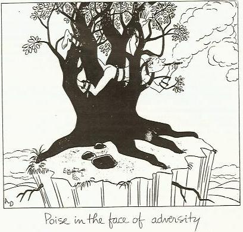
Someone may ask: "When the body is poisoned with wrong foods, why
does it learn to keep up with the poison?" Well,
it does
not. Man is ignorant of this because he suppressed the upcoming pain
by wandering deeper into the dark realms of matter, energy, space and time .
When man violates nature, the nervous system signals with pain
whenever the body
as a whole unit is threatened. At this moment
all activity, all food intake, all curing must cease at once.
The intelligence of the body does something very remarkable when it
has been poisoned. It concentrates its elimination process to just one
body part. The system actually blocks the usage of the most abused and
therefore
weakest organ or limb and uses it as a target for
elimination. (Just as a predator chooses the weakest animal.) At first
it enlists pain to stop activity and next it draws poison ladened
(???) into its objective. This inflames the body-part and it starts
ulcerating. When the system is clean again the symptom of disease
disappears and the
total harmony of the body is restored.
Man does not heed this process of restoration, instead he overrides it
with his own healing practices. He always has to meddle with nature
because he is a God unto himself. Whenever his conscience says: "Man,
stop and rest - wait until the symptom of disease has done its work,"
he employs the enemy instead and expects him to fight off his
elimination processes. His intent is to escape paoin. The enemies are
his strife for cures (exercises, travels, socializing), his mental
activities (hypnotism, suggestions, worrying), his foods (special
diets, medicines, herbs, vitamins and drugs). The escapes seem to work
because the pain stops and the sickness retreats. But it is a
treachery. Man in his doing
always does a suicidal job when he
allies himself with the enemy. The symptom disappears at the cost of a
faster deteriorating body.
What really happened when diseased was suppressed is this: all of
man's remaining vital resources had to be mobilized to cope with the
new intruder, the medicines, the exercises and the anxieties. The
nervous system released the former pain-blockade, the inflammation
receded and all seemed to be well again. But the poison has remained
inside in addition to the new ones. The body merely resigned itself to
a lower level of functioning.
All this leads to a logical conclusion:
A man's body may die
while his dulled spirit remains addicted to wrongness beyond the
body's death. That explains the appearance of all the sick people on
earth. Due to nature's recreating force the entity simply hides itself
in a new body. Sick spirits inherit bodies and minds with a lowered
functioning capability. Nature demands payment. Only a man who
practices self-responsibility has a chance to redeem himself. If not,
earth will be populated with an increasingly lower form of life.
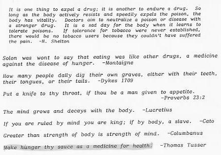
17 Endorphins
The physical body has been given a way to subdue pain naturally in the
form of a built-in chemical. This pain killing system is a supply of
endorphins located inside the body and which have more power over the
nervous system than the strongest opium. These pain-killers are
released naturally whenever pain becomes unbearable. hey make it
possible for man to remain comfortable in his body in an otherwise
unendurable condition of pain. Endorphins block pain from reaching the
brain, but do not heal the disease. All this happens without help from
the individual himself because they are provided by nature and are
under the control of the body.
Man is damaging himself immensely when he takes the escape from pain
in his own hands by using drugs, or when he employs the help of
emotion, mind and activity. Neither must he seek relief in food, sex,
thoughts, and activities.
The ego has a false drive to defend itself. It demands to be treated
with drugs or other cures, which make man's "body-given" endorphins
dwindle and eventually vanish altogether. When outer means take over
the suppression of pain instead of endorphins, their natural
production atrophies. Now man is forced to depend on his self-created
cures as they have become his masters.
Man's first aim ought to be to stay away from all cures, and his
second aim to correct his additions. This will enable healing pains to
surface which should be welcomed. They should never be feared because
they appear only as the nerve center become alive again. But if pain
becomes intolerable, they will be naturally subdued by a reestablished
endorphin release.
When you choose the lesser of two evils, always remember
that it is still an evil.
- Max Lerner
18 The mind cannot save the glutton
No matter how securely a harmful habit has jailed the glutton, there is
absolute healing by not suppressing withdrawal pains. With the
reasoning mind, a man can know all about his dangerous condition and
still be incapable of having control over them. The mind does not
save, only the constant denial to suppress withdrawal pains will bring
the release. The motto is: "If you want real relief, do nothing."
Reasoning does not produce newness.
Instead of reasoning things
out, a man must remain with the problem. This puts a higher seed of
truth into the soil of his being. A patient waiting for it to grow is
necessary, and in time it will bear fruit. This is a metamorphosis; a
transformation ot a higher place that can never be reached through
reasoning.
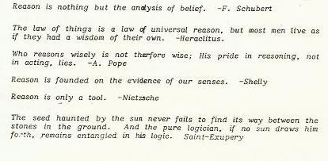
19 Pain is a heavenly guide
Man has turned away from God and escaped into a physical body. His
perception of his surroundings has become equally physical. This world
can never be a happy world because it has the presenece of pain in
it. But
pain is only a fence that guards the road to Heaven. It
appears as a warning whenever man is straying off the path. Pain says:
"stop here and turn around!" But instead, man ignores pain by doing
more wrong. He uses stimulating practices to dull the awareness of
pain so that he may continue doing wrong.
Man's spirit is terribly sick and has been sick before it entered
earth. Everyone needs to be healed. Sick people are in career of
conquest; they are the leaders in every field of human life. They do
not know their fatal condition because they have buried it; only a
drive for survival has remained. To be somebody has become man's
meaning of life.
Sooner or later people may have a glimpse of their fatality, and
depression settles in. The truth becomes so horrifying that, instead
of retracing their wrong steps, they choose suicidal practices as the
way out. They escape into more activity, more drugs and more
excitement until unawareness has overtaken them again.
Every creature on earth lives a painful life. They all have an enemy
outside themselves and do battle with it. Survival is lord and every
microbe, plant, and animal partakes in it.
If a man is told that he does not have to survive in his world, he
answers with hostility. He must do so because his only possessions are
his physical senses, and he feels doomed whenever he stops carrying
out their deadly commands.
Eternal life comes into vision with a conviction that says:
If I am in pain, I must do nothing about it but suffer
it through to the very end
The symptom of every disease has to be dissolved into
pain.
An emotion ceases to be a passion as soon as we form a
clear and distinct idea of it.
- Spinoza
We hear and apprehend only what we already half know.
- Thoreau
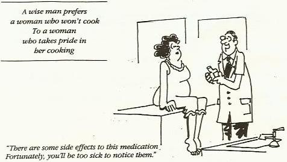
20 Disease is a soul saver
Every symptom of a disease has one purpose: to throw out accumulated
poisons. A disease is a house cleaning, and is thereby life
restoring. If this is a fact then
not a single disease is
dangerous, nor has it ever done any harm, whether it had appeared on
the physical, mental or spiritual level.
The above statement needs explanation: There are poisons that have
accumulated in man's psychological make up as well as in his body. The
psychological body is healed through a catharsis. In a crisis,
abberrations surface and purify the system.
A healthy condition of the body eliminates poisons through physical
channels; such are the digestive tract, the body membranes and other
legitimate organs. But when the body is overburdened with poisonous
substances, its intelligence takes on emergency measures of
elimination. This results in an inflammation. At the most vulnerable
spot in the body, a reddening of body tissue is experienced which
eventually ulcerates. This is an emergency elimination. Every disease
of the body starts with body-saving attempts such as colds, tumors and
other inflammations. But when the body energy is exhausted this
process will switch to body-destroying chronic diseases such as
arthritis, cancer, aids and others. As shocking as it may sound,
a body-destroying disease is equally a life-saving disease. It
is man's inner body, his soul, that has to be saved.
Life
protects integrity be sacrificing the physical body. A
body-destroying disease safeguards a man from falling into a lower
form of life. Under no circumstances must a body-destroying disease be
suppressed with medicines and treatments so that it may exist a few
days longer in a state that corrupts body, mind and soul.
To
smother the awareness of pain with drugs degrades the integrity of
life.
Diseases perpetuate with the eating of undigestible foods that ferment
and putrefy in the digestive tract. This produces alcohols and
acids. These in turn are absorbed into the inner body system. Even
fruits ferment when eating in large quantities or when digestive power
is weakened. Anger and frustration are other disease builders. They
produce indigestion regardless of the quality of foods eaten. Drugs
enter the bloodstream directly and do the greatest harm.
It is man's surrender to a hostile living condition which makes
him sick and not the hostile condition. Conditions have no power
unless fought against; and to ingest stimulating but indigestible
foods to mask the pain of detoxification is only one example of a
false surrender. Now they become addictive. Because man lives by false
principles on all levels of life, he strives to survive at all cost in
his hostile world until all of his rejuvenating life-force has been
dissipated. Most humans never return to the naturalness of a well
functioning mind and body, although at one time they could have dont
it. But it is too late then the clearness of mind is gone. Toxicity
has done its work.
Sick people see sick people as healthy people. They don't know what
health is and much less of hot it is attained. Health depends on the
availability of vital energy, and if depleted, poisons remain hidden
and man remains in his zombie state. Therefore, a detoxification
process, (which is the apperance of a disease) as well as a catharsis
must never be suppressed. A disease can only happen when vitatlity is
present and if not, the body keels over and dies. Only vital energy
can push out poison and restore health, and for that it needs
rest. Drugs, cures and mental self-esteeming do just the opposite. Any
help other than the removal of harmful obstructions does tremendously
greater damage than the original trespassing. Any treatment causes the
symptom (the inflammation, tumor or insanity) to retreat only
temporarily, because the intrusion or exertion which any interference
from outside represents is a greater threat to body and mind. The body
always acts intelligently because, if vital energy is not yet
depleted, more important things are at stake. The remaining vitality
must hold the new intruder in check and postpone its house cleaning
until new energy becomes available again.
Any treatment that has the intention to heal body and mind is
not only wrong, it intensifies destruction. A medicine is a deadly
substance; it kills a man's soul.
Due to the agitation of a treatment, a symptom recedes and the organ
seems to function again. (The organ was never sick in the first place,
it just so happened that it served as a target for elimination.) This
"Un-healing" came about because neutralization of the new intruder
comes first. As they are poisons, they must be stored inside the
body's cell structure in order to be processed at a later time. The
remaining vital energy makes the body active again, but - and here is
the tragedy - with less functioning power. This proves the fact that
any treatment suppresses
only the symptom of a disease while
the poison remains inside. Never again does body and mind function
with their full capacity.
To gain back health, there must be a detoxification. This causes a
rejuvenation of every cell. This process is consistent with nature and
is accomplished without any interference from a man's effort in
exercising, in positive thinking, or emotional concerns; only rest
with its stillness is required.
Every man can learn to stop his indulgence in perverted lifestyles. He
can thrive on the simple pleasures which he may experience in fresh
air, a clean environment, a calm mind, and pure foods. These must
become his new love.
No man ever healed his body with his mind, nor did he heal it by
eating or exercising. All these are activities that use up vital
energy by stimulating the body.
Only rest is invigorating, all
else is a wasting away of energy.
The existence of death is proving the fact that every living thing on
earth is sick. Man has made his home in an incinerator. Ancient
philosophers knew this world better than we do today when they called
it "Underworld."
The idea that foods do something good is one of the greatest
fallacies. Eating fruits is good only because they are not offending
the system. While drawing the least energy in their digestion, it is
used for other purposes.
Drugs are supposed to fight a problem, but it is self-evident that
they cause death. Francis Bacon must have known all this when he said
"Cure the disease and kill the patient." Now you as the sufferer
will have a new responsibiity. Never again can you ask anyone to heal
you, because if you do, your help becomes a partner in your own
suicide.
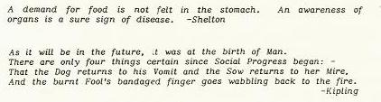
21 Old wive's tales
The illogic of old wife's tales is unfathomable. One of their ideas is
that any sickness, like tooth decay or hair loss, has its source in a
deficiency of some kind; that the body didn't get enough vitamins,
minerals or proteins. This is a great lie because the real cause of a
sickness likes in an exact opposite direction. The body has been
bombarded with too much foodstuff, especially with elements of
destroyed cell structures. Any chemical taken into the body that is
not predigested by the plant kingdom becomes a poison. The body can
eliminate a substance only when it is bound inside a living cell. A
sickness appears when dead substances have been added instead of taken
away.
Every time a man wanders away from health a symptom of sickness
appears. The early ones are colds, ulcers and tooth decays. They act
as check points that warn him that any further advancement in this
direction will bring greater harm.
A sickeness shows that the health of the body as a whole unit has
been violated. Unnatural foods draw vital substances from all of the
bodys tissues and bones for their neutralization. The body replaces the
resulting voids with morbid sludge which now clogs up the system. The
body deteriorates as a whole unit and only the presence of vital
energy can start a cleaning process for which the weakest or most
abused part of the body is chosen. This is the appearance of disease.
Ignorant people must always plot and plan to bring on a healing
instead of letting the body heal itself. Originally, the tale of
missing substances was invented in a voodoo kitchen with the purpose
of getting gullible people under the voodoo priest's control. The
victim is sold the right elixir that overpowers pain. And then's when
he comes under his control.
r40mm
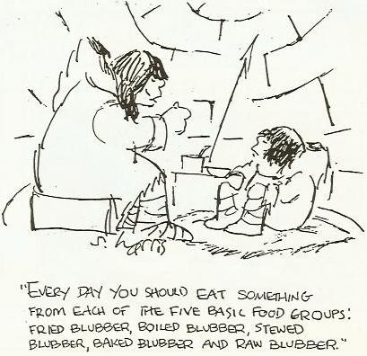
22 Not doing but resting heals
The body heals itself only when nothing from outside interferes. A
complete rest is all that is needed. The more a person stays away from
foods, mental stimulations and activities of the body, the more energy
can be utilized by the body for self-healing. But humans are so run
down mentally, emotionally and physically that they cannot remain in
that restful state. That's why less energy wasting practices are
allowed, like eating fruits only, moving around sparingly and
entertaining the mind moderately. The road back to health is to engage
in progressively less damaging habits.
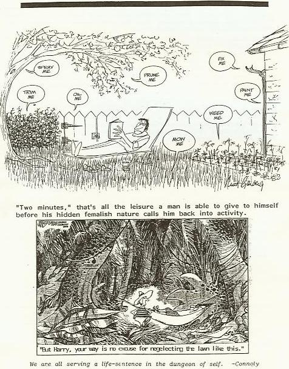
23 The house of health
Every man can move into a healthy body, a good feeling, a peaceful
mind and a pleasant activity as he would move into a beautiful new
home. But the spiritual home demands a different way of purchasing
because it cannot be mortgaged. The spiritual home has to be paid in
cash before hand. But how is this money acquired? Isn't it by giving
up the old method of saying "I already know what's good for me and I
only have to do something to get it!" It has never worked. All this
has to be replaced with a daily practice of: "I do not know what is
good for me, therefore I will do nothing. I will suffer the full pain
of my inner condition until it is lifted by a higher source!"
Man has to die so that he may live.
You do not exist and that's why not doing anything for
yourself can restore health on all levels of existence, whether it is
on the physical, emotional or mental level.
To do nothing leads back to a state that does not exist on
those levels. It is the home of the soul from where all subsequent
levels receive their rules. "You believe that you exist and to
confirm it to yourself, you start with all of your doing."
Health is a "do it yourself" affair, but in a special way. All
falsehoods are taken away and all riches are added by
"Self-Observation" combined with "Doing Nothing." The Bible makes
the same request when it states in Matthew 17:21 "but this kind does
not go out except through prayer and fasting." It does not say that
man may fall asleep. The special way consists of: "be nothing, think
nothing, feel nothing and do nothing." Only by his own effort to
stick with that can he be helped and it is exactly this effort which
he shuns.
Do nothing and wait! This is all the knowledge a man
needs. Only that will make the new house appear.
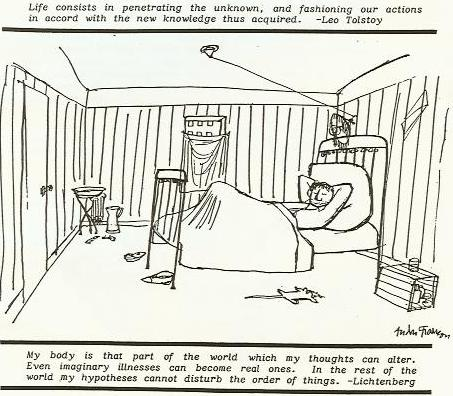
24 Crystallized wants
In God's world there are no humans. Nothing that truly exists would
ever die. Humans are chased by an equally non-existent outside world
and it is only a matter of time when both have cancelled each other
out and disappeared.
A man who knows the truth about himself recognizes that everybody
wants to make himself real. They are driven to take experiences from
the past to build a future. But this "presence" has no reality at
all in God's eyes. It is a "bubble" that is active in a non-existent
state. God cannot exist in its world either other than through the law
of cause and effect.
There is the example of the man who borrowed a dinner to keep himself
alve and his hunger-pain subdued. Going into debt is never right,
instead this man should have remained hungry until his pain
disappeared, because all healings come by non-interference. He had
refused to see that "EVERY DEBT HAS TO BE PAID BACK." Instead he
borrowed more dinners.
Man shall not live on borrowed substance! What would happen if a man
starts to pay off the future to the past to the past and keep nothing
for the present? He becomes less and less until one day he would
disappear. He simply is returning to his natural state.
Only a self-created entity can die. A new being will emerge that is
real. This is the true meaning of being born again.
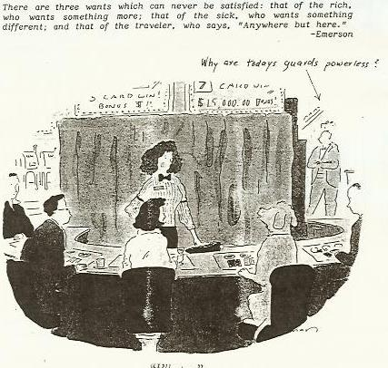
25 Hershey bars
When we were children we loved Hershey bars but as we became older
this craving grew and turned into sexual love. Sex is so much more
stimulating than food.
Man is on a wrong journey that leads him away from God and into matter, energy, space and time ,
and instead of getting his sustenance from God he derives it from
these factors. And the more he feeds himself the deeper he travels
into them. This journey uses up his inherited spiritual energy and
thereby he extinguishes his self-awareness. An universe that can be
grasped with the intellect belongs to Lucifer and represents death to
anyone who has entered into it. It depends only on the speed he is
travelling and of how long vital energy holds out that determines the
time of death.
Before man entered earth he already had a developed cannibal nature
otherwise he would refuse to eat mother, because that's what every new
born entity is doing. As soon as the infant matures a little it begins
to feed off her emotional nature. Soon mother won't satisfy and man
escapes into his sexual nature.
A need for sex is completely unnecessary for any man who wants to
return to his sane nature. But the procreation game is too great a
pleasure to miss out on, so the paycheck for received pleasures is
pushed deeper into time.
To cancel time man must turn away from all hungers. But they have to
be resolved in an orderly fashion. It is impossible to stay away from
enticing foods or tight love relations if man is caught up in his
intellect. Since it was formed last in the line of descent, (it lays
on a deeper time level), it has to be resolved first.
Every vice has been spilling over into the next vice and had delayed
the death of the physical body. When anger was tolerated in his Soul
nature, it went into hiding by creating the ego with its body, but the
body soon could not handle the anger and emotions came into
being. Emotions seek an outlet in food. But food soon is outdone by a
need for sex. Procreation appears when two people consume each other
in a sex-embrace. Competition for companionship develops the intellect
which then is driven to exploit the environment. Pollution is the
result. This activates whole new chains of perversion until
destruction is completed.
To gain back life is to curb hunger on all levels. The whole thinking
process of man has to be reversed, so that survival in the physical
realm is seen as being wrong.
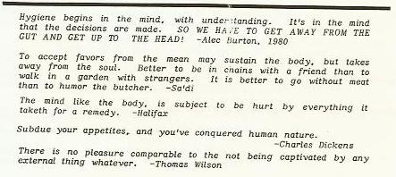
26 The barroom
A bar that serves no alcohol and has no sexual attractions or other
excitements would lose all of its attraction. Planet earth is such a
bar because in it man thrives on stimulating substances, is depending
on procreation and indulges in senseless activities. Their sudden
disappearance would mean the end of human life and since there is a
huge universe, man would appear somewhere else to have fun. The
physical body came into existence because man needed a barroom to
escape from facing God.
Man's life is not real. He should never be afraid to walk out of this
world, which of course does not mean committing suicide. There
certainly is a life that lies above the physical body, but what his
new body may look like need not be his concern. A physical body is
very limited, it can only see, hear, taste, touch and smell. If man
became aware that he lives by its domain and only indulges in sex,
emotionalism and egogratifications, he would get out fast. Giving up
coarse, crude, vulgar, gross, lewd, obscene, offensive sensations has
to become the purpose of his life. It is his duty to walk out while he
is still alive.
Sow a thought and you reap and act. Sow an act and you reap a
habit. Sow a habit and you reap a character. Sow a character and you
reap a destiny. It's so simple is it not?
What is right can never be destroyed, so do only right and you shall
live forever.
27 The castle in the air
A man had a heavenly vision that resembled a castle in the air. He
directed his whole life to build a foundation under it. Other people
sensed that this man had a happy and purposeful life so they sought
him out for advice. The visionary was happy to help along. He gave
classes on how to attain the Higher Life. His students became
successful. One turned into a great artist but the teacher was
dismayed because he saw no application of his vision in his
unfoldment. Another student became a successful leader of society but
again there was no vision. Another became a philosophical teacher but
he also was empty of vision. Many became successful in business but
their lives remained empty. Almost no one sought the teacher's
gift. Eventually the visionary completed the foundation to his castle
and ascended into invisibility. He left no fame of his life
behind. And the students were aghast.
When something "is," it must have always been. Something that has
become visible we call creation, like gas that has become a fluid and
a fluid that turns into ice or vice versa. Everything that disappears
from our sight becomes visible on another level. If this world fades
away it did not fade away of its own but by a withdrawal from - or an
addition to - an outside source. No man can go higher except that he
gives himself up to the life principle that governs the whole
universe. He does not have to use mind or body for that.
You may lose your old nature either by fasting from yourself or
indulging yourself. The first takes you out of the physical world, the
second binds you to the physical world.
You either can let nature take care of you or you can struggle and do
it yourself. The first rebuilds body, mind and soul and the second
destroys body, mind and soul.
28 All food is destructive
Food keeps man in a limited physical existence where he can hide from
God. But man's purpose of life is to choose rightly and face God
again. This will dissolve his body. To start this process is to
disconnect from all lower desires. That will return him to the higher
and follows a certain order which can be learned. Every level of life
draws its own kind of food. A warrior must eat meat to arouse anger so
that he may face his enemy. But the enemy can be any life-situation. A
fruit eater cannot be taken to war nor will he meet with the successes
of this world, as he sees no reason to fight. A grass eating dear does
not kill, he has no drive for it. Over time man has constantly
travelled deeper into his body thereby he became increasingly more
hostile and his food intake became coarser. From the harmless entity
living in the paradisical world he changed into a predator. Eating
destroyed foods, he has taken on the nature of a vulture and a
pig. Only Satan himself could have taught man to go deeper and use
fire to prepare his food. But fire turns food to ashes. Man lives
cleanest from living cells and not from dead matter. Busted cells
become minerals and like every medicine, are a poison.
Presently man is a self-harming animal that still has a choice to
return to a harmless state and transcend animal nature. He can climb
up to his higher body which are his heart and mind. If he does not,
his fate is sealed. He is a branch that is cut off from the vine and
is consumed by fire. Here is a fundamental approach to life:
Matter is the end of creation and all of it turns into
dust. Build your life on matter and you will experience unending pain
that will last as long as matter exists. Direct all your aim to return
to your spiritual home and you will come back to life again.
A return to a higher world is orderly and follows a perfect
sequence. Being stuck in the lower parts of the body is like living
inside the legs and the excretory organs. All of a man's thinking and
acting is connected to these centers. The ego symbolizes the excretes
of the human entity. To live there destroys him fastest and requires a
digestive environment that has turned acidic to cope with. Man still
can stop that process and travel upwards into his heart and mind. On
the way he has to disconnect from the sex center (procreation) and the
solar plexus (emotion). Withdrawal takes away the wind to a fire and
his coarse nature disappears.
The false desire to survive in a material universe permeates every
sphere of life. A long life in the physical body is needed for
learning how to give up one's life for righteousness sake. Instead,
man does everything to survive in this hellish surrounding. That
degrades his God-given integrity so that he may remain there. But
instead, man's life becomes shorter in consciousness. Today's bodies
are goaded into life with medical knowledge at the cost of integrity
of life.
The first religious teachings on this earth probably was the knowledge
that man had no right to life there. This has meant a journey to a
complete dissolution of his material existence. Every successive
religion has increasingly compromised with this goal until it got
mixed up with procreation.
Man never evolved out of a beast, but he can become the beast by his
own choice. Man was a spark of light that has wandered away from God
and joined itself with matter, increasingly losing his essence. Every
time a man makes himself more comfortable in this world, he becomes a
little more saturated with matter.
All of man's foods are stimulants by which he draws a fake life to
himself. Man's true food is life and it does not come from food. The
deeper a man dives into his body, the more lifeless the substance of
his food becomes and the greater the quantity of it he must eat. This
enables him to cope with his degenerating outside world. The first
man must have lived by breath alone. Then came a heavier food that
took the form of fruits. They just offered themselves to man by having
beautiful colors and a sweet aroma and taste. Fruits are enticing to
the eye, smell fragrantly and taste wonderfully. Eating them involves
no killing. But as man became emotional, he needed coarser foods and
he began to eat roots, stalks and leaves. Next he digressed to grains
and nuts. But these substances were created to beget new life and
eating them became a violation. Suddenly he realized that he had cast
himself out of paradise and he blamed God for it. The deeper he sunk
into his body the heavier in substance became his food. To the degree
he killed his food he also killed himself. He had to cope with pain
that came from his choice to turn away from God. Today man feels
nothing wrong when he kills life.
Man made himself a servant of fire. The consuming of meat is a
consummation of self. But by using fire to destroy his food, he
speeded up this process. Cells are alive and give life to the body,
but when they burst by fire they turn into lifeless minerals. Minerals
are equal to sand and dust. Lifeless matter goads essence into
exhaustion.
Food never builds like but destroys life and it is the density of the
food that determines the speed. The further man travels away from his
paradisical life the heavier his food becomes and the shorter is his
life. Today's food is saturated with ashes and the application of fire
was the cause of it. It turned organic substances into minerals and
chemicals. Man has become so coarse that mineral substances must give
life. Fruits give no satisfaction and he craves for proteins,
carbohydrates and minerals. They are still able to draw out life.
29 The world of duality
Every living thing that appeared in a universe of matter, energy, space and time became encased
in a body that equals the nature of its surrounding. It is the world
of duality in which the highest entity, which is represented in man,
still has a choice. A human being can return to his higher body. But
he also can burn himself out and become the dust of the universe. This
world of duality gives man two eyes, two legs, two brain halves,
etc. Man can go the right way or the wrong way. He can be happy or
sad, negative or positive, dull or alert, right or wrong. His stomach
can be empty or full. What he is inside he experiences outside. It is
the world of high and low, cold and hot, dark and light, sweet and
bitter, pleasant and unpleasant. Man experiences the real light of the
sun and an artificial light of the moon. The purpose of this universe
is to give man a choice. He either can go up or down. When he returns
willingly to his home he will be happy. But he really has no choice
because when he goes down, he still will be made to return forcefully
by serving as building blocks for the universe. He has to serve until
he has paid back all he has done wrong. He will be ground to
dust. Unless man is under spiritual guideance he inevitably will
become entangled in matter (building up karma). If a man wants to
survive in this world he has to be more cruel than his
surrounding. Going to heaven means not to learn to lose. A good
exercise is to undertake a job in this world and let yourself be
defeated by it. The point is to remain content. Then go on to the next
job and do it all over again.
One can live only so long as one is intoxicated, drunk
with life; But when one grows sober one cannot fail to see that it is
all a stupid cheat. What is truest about it is that it is not funny
but cruel stupidity.
- Tolstoy
30 The body is a child of the mind
Above a man's existence is awareness that filters into the brain. With
the mind one becomes aware of a body. Actually, the mind made the body
(with God's help) because it needs a place to hide from pain. And
therefore it is responsible for the condition of the body. If the mind
is mixed up, the body is mixed up too. A change of body has to start
in the mind. As the mind becomes whole again, the old body falls
away. When there is right instruction from above, the mind will take
the lead and the body will change to a higher form. It will escape the
"trap of earth."
What is the right kind of food for the body? It can only be a food
that has living cells, as found in fresh fruits. It maintains a clear
thinking mind and keeps the body healthy. All other foods taken in
come as a suggestion of an evil source and drug the brain. Foods that
are destroyed by fire (cooking) act as a drug and the mind cannot
think clearly. The proteins in meats and dairy products putrefy in the
intestines, they give up the acids to the blood which carries it to
every cell in the body. It courses through the brain and drugs it with
the same force as any other acid would do. Man eats carbohydrates as
found in breads and potatoes that ferment in the body which produces
alcohol that narcotizes the mind. Earth sure is a dangerous place and
few there are that see it.
Destroyed cells are heavy with matter, and like everything dead that
is eaten, poison the body. It has to be expelled at the cost of vital
energy. Only living food produces healthy body functions and keeps all
parts of the brain working harmoniously.
Humankind is kept alive by a fear for the death of their bodies. A
wrong voice is saying, "save your physical body and take the
medicine!" The higher voice says: "you don't have to compromise to
keep your body alive." To goad the body into health is to lose the
soul. Only God gives life. Investigate for yourself what life is all
about!
All humans can be divided into two groups, those that worship their
bodies and hang on to it all cost, and those that strive for
detachment, not knowing what comes next. It is not the physical death
that is at stake, it is spiritual death that is the real
tragedy. Therefore, it is proper to save the soul and let a false life
fall away.
The lower body consists of:
- every emotion, either good or bad
- sex and the struggle for companionship
- the building of the intellect and its activities
These centers, which all are located below the lowest
rib from which the woman is made out of, are entirely unnecessary for
experiencing the real life. They came into existence as man chose to
turn away from God and needed a companion. Of course man may attend to
their necessities temporarily, because the desire for them is
strong. An unhealthy muscle can atrophy, and thereby become unable to
do harm. Let all of your lower centers atrophy because they are liars,
and when they seem to give something to you it is for the purpose of
harming you. They use tricks to fool you. Attain this attitude, "I
won't even listen to them because I won't believe what they say!"
To close your life to foolish conduct deserves integrity. Do the
exercise to never discuss "lower body" desires. A mature man does
not insist on keeping an open mind, he closes it to anything vulgar
and which promotes lowness. He works on closing off the exit to his
lower body. In contrast, a fanatic mind has locked himself tightly
inside of it, unable to escape.
If all of this makes sense to you, "Do Nothing but see it." This
invites rescue. It comes like a gushing well that is reviving a
garden. This is the only correct science because it is a renewal of
life.
The way out begins with this statement: "he who indulged in wrongness
until he has become sick must withdraw from it until he is well
again." Every healing starts with a withdrawal from destructive
habits which were devised to suppress pain. Do not run away from God
any longer, but face the habit's uncomfortableness. Remaining with
withdrawal pain brings more suppressed pain to the surface. But when
it is not freshly subdued but suffered until release from a higher
source has arrived, healing occurs.
But old habits are not easily forgotten and pull the student back into
their power again. Luckily, due to his attained healing, the student
has become sensitive to pain again like a child when given alcohol. He
has become acutely sensitive to the new pain. As a matter of fact, a
fresh indulgence will multiply the pain. This is just what he needs to
keep clean. And now he is destined to wake up healed. With this
struggle a higher life is attained that will never make him go
downwards again.
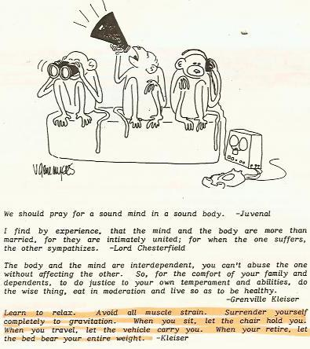
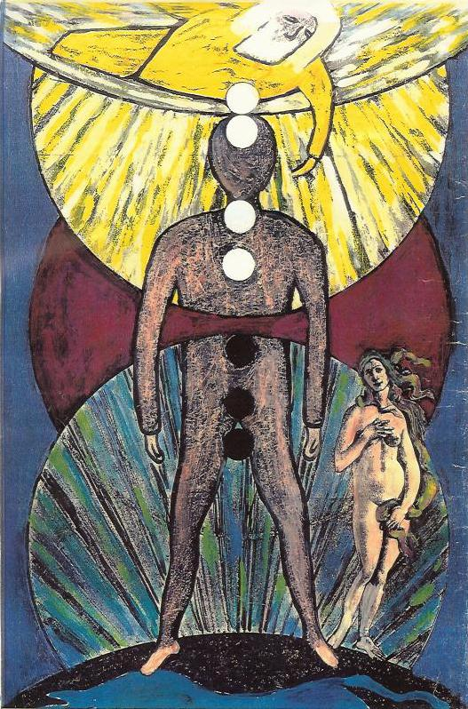
File translated from
TEX
by
TTH,
version 4.06.
On 18 Oct 2015, 19:05.